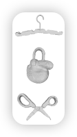
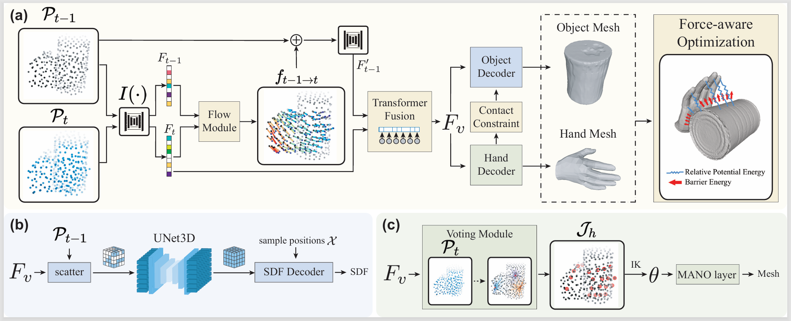
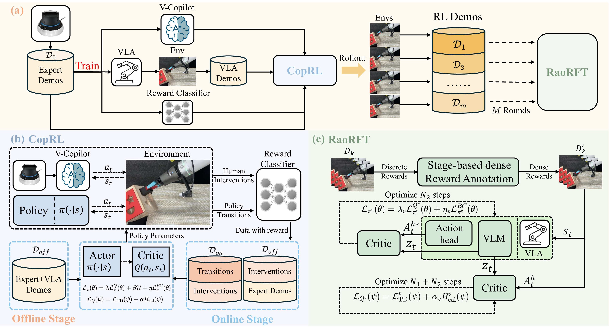
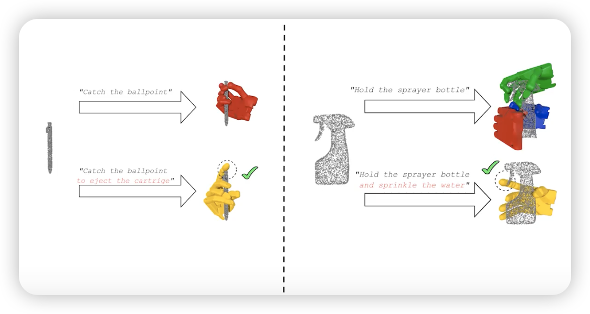
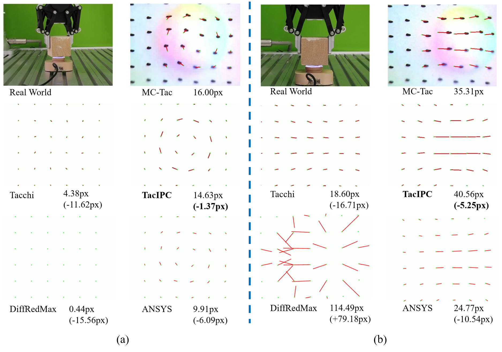
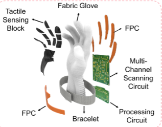
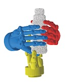
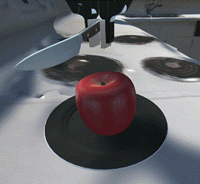
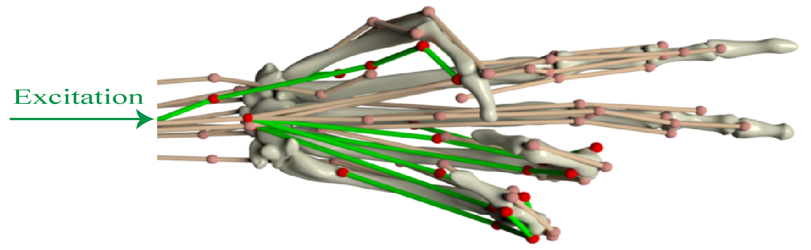

|
My name is Zhenjun Yu. I'm a graduate student majoring in Information Engineering in Shanghai Jiao Tong University (SJTU), advised by Prof. Cewu Lu and Dr. Wenqiang Xu. I am expected to graduate in March. 2026. My educational experiences include:
My hobbies include basketball, debates and Model United Nations. I was a member of the basketball team and debate team of our institute.
|
{kind=link}
|
[Aug. 2025] 1 paper accepted by CoRL 2025!
|

Precise Robotic Needle-Threading with Tactile Perception and Reinforcement LearningZhenjun Yu*, Wenqiang Xu*, Siqiong Yao, Jieji Ren, Tutian Tang, Yutong Li, Guoying Gu, Cewu LuConference on Robot Learning (CoRL) 2023 PDF / website

Visual-Tactile Sensing for In-Hand Object ReconstructionWenqiang Xu*, Zhenjun Yu*, Han Xue, Ruolin Ye, Siqiong Yao, Cewu Lu.IEEE/CVF Conference on Computer Vision and Pattern Recognition (CVPR) 2023 PDF / website

Dynamic Reconstruction of Hand-Object Interaction with Distributed Force-aware Contact RepresentationZhenjun Yu*, Wenqiang Xu*, Pengfei Xie, Yutong Li, Cewu LuIEEE/CVF International Conference on Computer Vision (ICCV) 2025 
AgentWorld:An Interactive Simulation Platform for Scene Construction and Mobile Robotic ManipulationYizheng Zhang*, Zhenjun Yu*, Jiaxin Lai, Cewu Lu, Lei HanConference on Robot Learning (CoRL) 2025 PDF / website

Offline reinforced finetuning for chunk-based VLA via real-world RL policy distillation with vision-guided copilotYihao Wu*, Zhenjun Yu*, Shun Yin, Zhihao Wang, Xueqian WangIEEE International Conference on Robotics & Automation (ICRA) 2026, in Review 
FBI: Learning Dexterous In-hand Manipulation with Dynamic Visuotactile Shortcut PolicyYijin Chen*, Wenqiang Xu*, Zhenjun Yu, Tutian Tang, Yutong Li, Siqiong Yao, Cewu LuIEEE International Conference on Robotics & Automation (ICRA) 2026, in Review PDF / website

DexTOG: Learning Task-Oriented Dexterous Grasp with Language ConditionJieyi Zhang, Wenqiang Xu, Zhenjun Yu, Pengfei Xie, Tutian Tang, Cewu LuIEEE Robotics and Automation Letters (RA-L) 2024 PDF / website

TacIPC: Intersection-and Inversion-free FEM-based Elastomer Simulation For Optical Tactile SensorsWenxin Du, Wenqiang Xu, Jieji Ren, Zhenjun Yu, Cewu LuIEEE Robotics and Automation Letters (RA-L) 2024 PDF / website

Capturing forceful interaction with deformable objects using a deep learning-powered stretchable tactile arrayChunpeng Jiang*, Wenqiang Xu*, Yutong Li, Zhenjun Yu et al.Nature Communications 2024 PDF / website

DiPGrasp: Parallel Local Searching for Efficient Differentiable Grasp PlanningWenqiang Xu*, Jieyi Zhang*, Tutian Tang, Zhenjun Yu, Yutong Li, Cewu LuIEEE Robotics and Automation Letters (RA-L) 2024 PDF / website

Rfuniverse: A Multiphysics Simulation Platform for Embodied AIHaoyuan Fu*, Wenqiang Xu*, Ruolin Ye*, Han Xue, Zhenjun Yu, Tutian Tang, Yutong Li, Wenxin Du, Jieyi Zhang, Cewu LuRobotics: Science and Systems (RSS) 2023 PDF / website

MS-MANO: Enabling Hand Pose Tracking with Biomechanical ConstraintsPengfei Xie*, Wenqiang Xu*, Tutian Tang, Zhenjun Yu, Cewu LuIEEE/CVF Conference on Computer Vision and Pattern Recognition (CVPR) 2023 PDF / website |
|